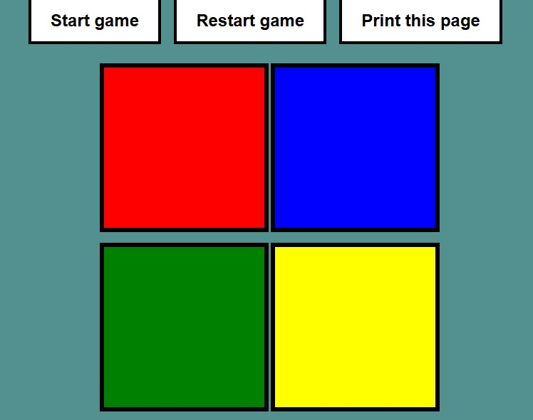
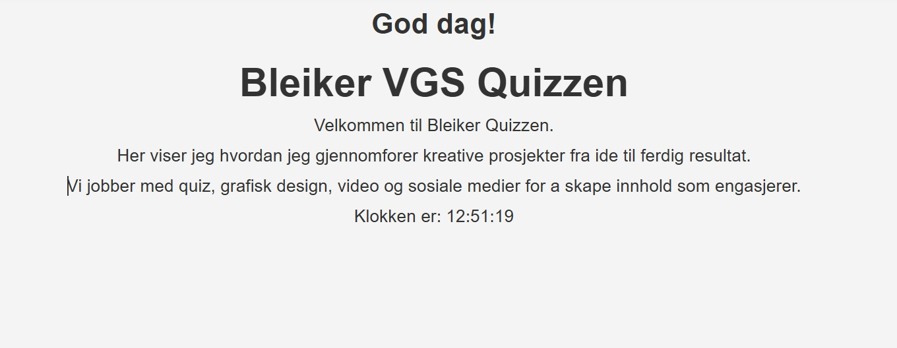

På denne siden presenterer jeg noen av GitHub-prosjektene mine og Wix-prosjekten min. Prosjektene viser utviklingen min innen webutvikling, fra enkle nettsider til mer interaktive løsninger med JavaScript. Jeg har jobbet med design, struktur, brukeropplevelse og funksjonalitet.

